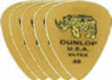

/*	function loadAnswer(){ */
  		var pageLine21 = '<div id="answer" style="display:none;">';
      /*<-- pageLine 22 will be changed -->*/
  		var pageLine22 = '';
  		var pageLine23 = '<div id="numPicks">';  
      /*<-- pageLine 24 will be changed -->*/		
  		var pageLine24 = '<p id="numPicksText" style="font-size:24px;">5 Correct Answers!</p> <br/>';
      /*<-- pageLine 25 will be changed -->*/
  		var pageLine25 = '';
  		var pageLine26 = '</div>';
  		var pageLine27 = '<br/><br/>';
  		var pageLine28 = '<p id="copyQuestion" style="padding:50px; font-size:36px;">';
      /*<-- pageLines 29 will be changed -->*/
  		var pageLine29 = 'The Gretsch Musical Instrument Company built the first "Country Gentleman" guitar for Chet Atkins in 1957. ';
      /*<-- pageLine 210 will be changed -->*/
  		var pageLine210= ' When George Harrison played it on the Ed Sullivan Show seeing sales spike by 25% in one week.</p>';
  		var pageLine211= '<br/><br/>';
		  var pageLine212= '';
  		var pageLine213= '</div>';

  		var pageElement2 = 	pageLine21 +
  							pageLine22 +
  							pageLine23 +
  							pageLine24 +
  							pageLine25 +
  							pageLine26 +
  							pageLine27 +
  							pageLine28 +
  							pageLine29 +
  							pageLine210 +
  							pageLine211 +
  							pageLine212 +
                pageLine213;


  		$('#marker').after(pageElement2); 
  	}; */